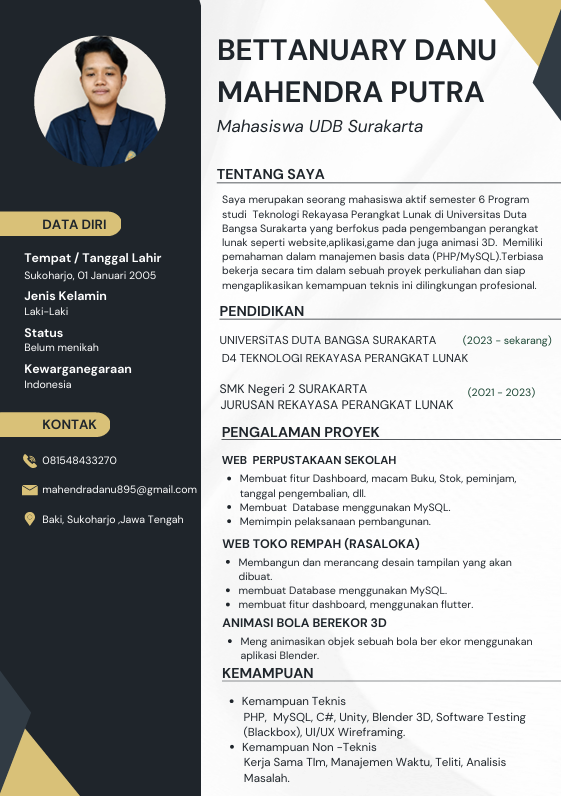
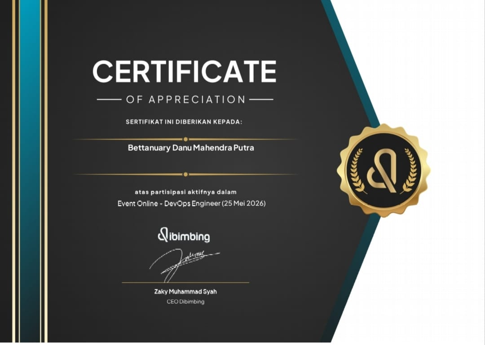
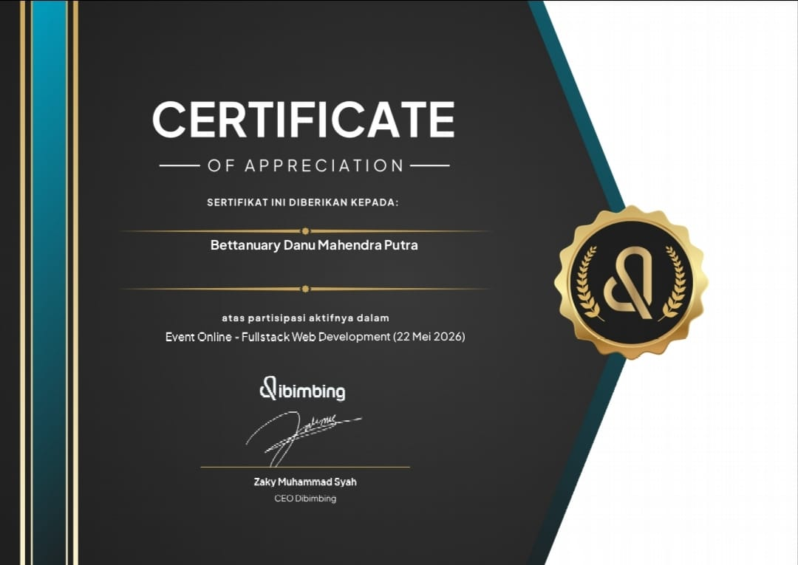
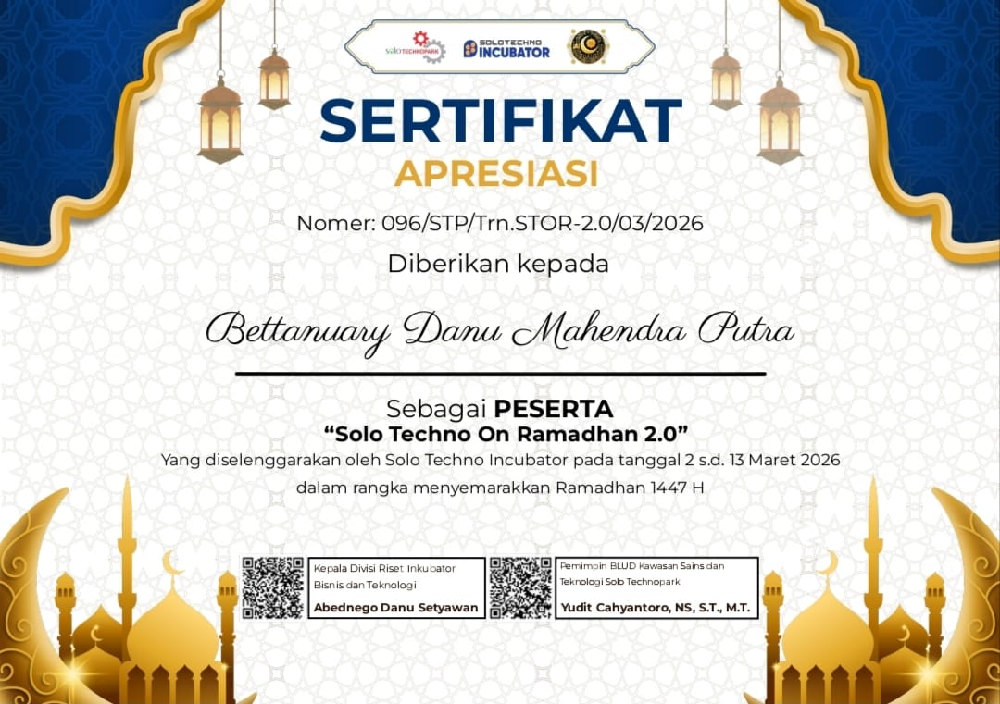
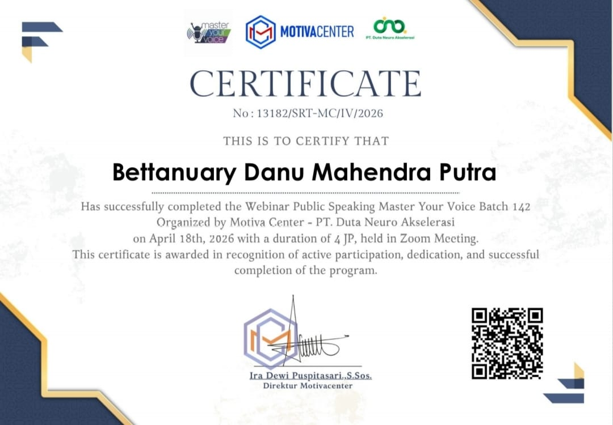
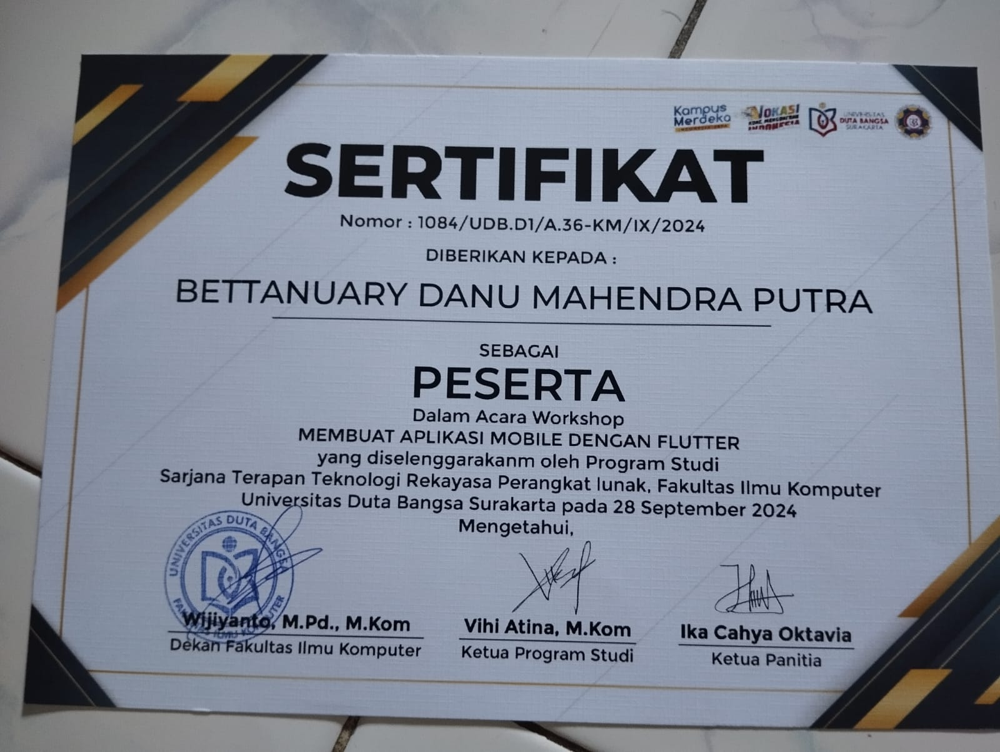
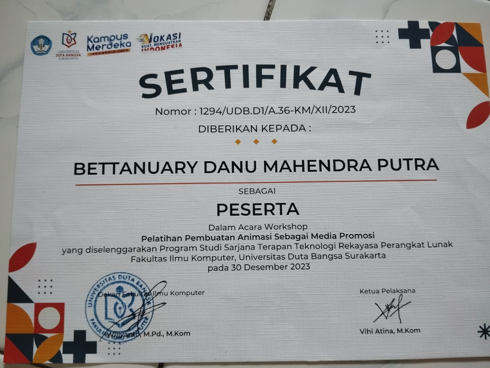
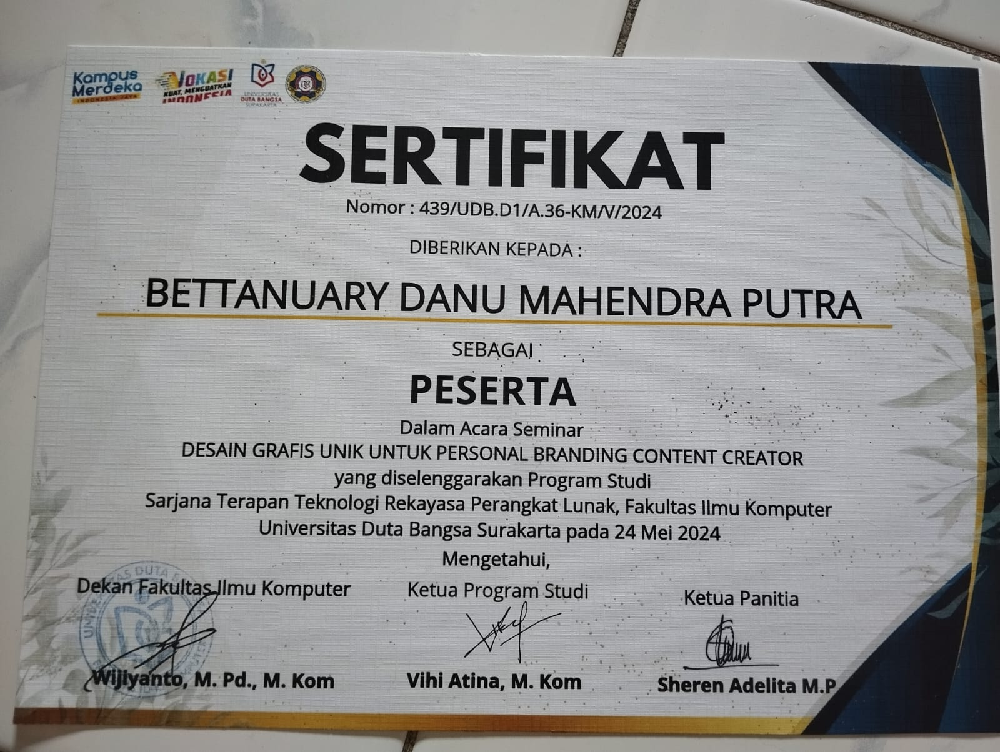

Saya seorang Mahasiswa Teknologi Rekayasa Perangkat Lunak
Kenalan Lebih Dekat
Saya merupakan seorang mahasiswa aktif semester 6 Program studi Teknologi Rekayasa Perangkat Lunak di Universitas Duta Bangsa Surakarta yang berfokus pada pengembangan perangkat lunak seperti website, aplikasi, game dan juga animasi 3D. Memiliki pemahaman dalam manajemen basis data (PHP/MySQL).
Sebagai seorang mahasiswa, saya terus belajar dan berinovasi untuk menghadapi tantangan di dunia teknologi yang terus berkembang. Saya memiliki minat yang besar dalam pengembangan perangkat lunak, terutama dalam pembuatan aplikasi mobile menggunakan Flutter, serta pengembangan website dengan CodeIgniter atau framework backend modern lainnya. Selain itu, saya juga memiliki ketertarikan dalam dunia animasi 3D menggunakan Blender, yang memungkinkan saya untuk menggabungkan kreativitas dengan teknologi.
Latar Belakang Akademis
Fakultas Ilmu Komputer / Universitas Duta Bangsa Surakarta
Fokus mempelajari siklus pengembangan software, manajemen basis data relasional, pembuatan Animasi 3D, pengujian perangkat lunak, serta arsitektur sistem berbasis web dan mobile.
SMK Negeri 2 Surakarta
Fokus pada dasar-dasar pemrograman algoritma dan pembuatan web menggunakan teknologi HTML5, CSS3, pemrograman sisi server dengan PHP, serta manajemen basis data tingkat dasar.
Sistem manajemen keluhan dan layanan kampus terintegrasi yang andal, aman, dan efisien untuk mahasiswa serta admin.
Platform informasi publik resmi untuk mengenalkan potensi wilayah, struktur organisasi, berita, serta transparansi layanan Desa Kalimati, Kabupaten Boyolali.
Aplikasi mobile lintas platform yang memudahkan masyarakat mencari ketersediaan stok darah, mendaftar jadwal donor, serta memetakan lokasi posko donor darah terdekat.
Simulasi gerakan mekanika fluida dan prinsip dasar animasi (Squash & Stretch) pada objek berekor di Blender.
Aplikasi kompresi video instan berbasis web yang memanfaatkan teknologi WebAssembly untuk memproses video langsung di browser pengguna tanpa melalui server pihak ketiga.
Aplikasi web utilitas untuk mengubah format gambar PNG menjadi JPEG secara instan dengan penanganan transparansi secara lokal.
Aplikasi web manajemen koleksi perpustakaan sekolah yang mendukung operasi CRUD data buku secara dinamis langsung dari antarmuka pengguna.
Aplikasi Point of Sales (POS) dan Enterprise Analytics Dashboard interaktif dengan arsitektur manajemen state data terpusat di sisi klien.
Informasi Riwayat Hidup Profesional

Berisi rangkuman riwayat akademis, tumpukan teknologi (tech stack), keahlian teknis, serta rekam jejak pengerjaan proyek software development saya.
Koleksi Sertifikat Kompetensi

Penyelenggara: dibimbing.id

Penyelenggara: dibimbing.id
Penyelenggara: Hacktiv8 Indonesia

Penyelenggara: Solo Techno Incubator
Penyelenggara: Universitas Anwar Medika

Penyelenggara: PT Duta Neuro Akselerasi

Penyelenggara: Universitas Duta Bangsa Surakarta

Penyelenggara: Universitas Duta Bangsa Surakarta

Penyelenggara: Universitas Duta Bangsa Surakarta
Ada proyek yang mau didiskusikan? Silakan hubungi saya.